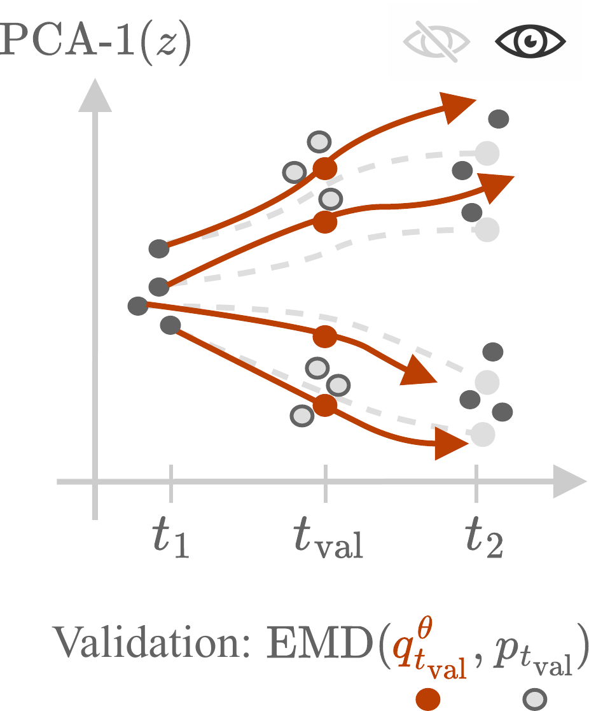
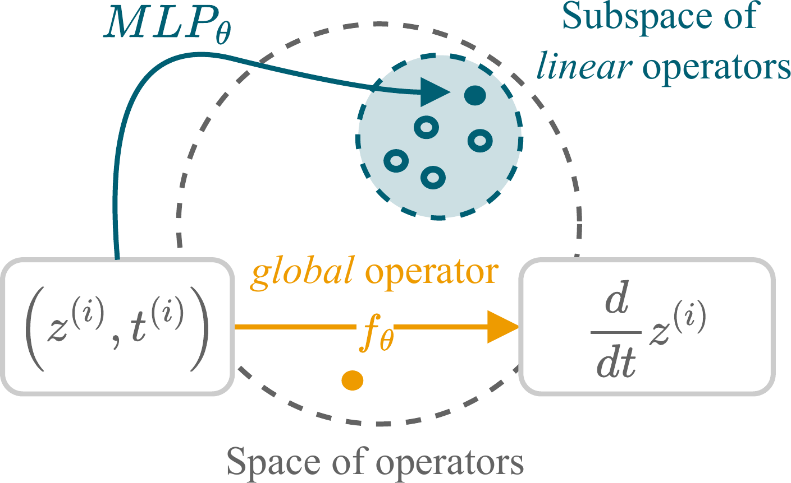
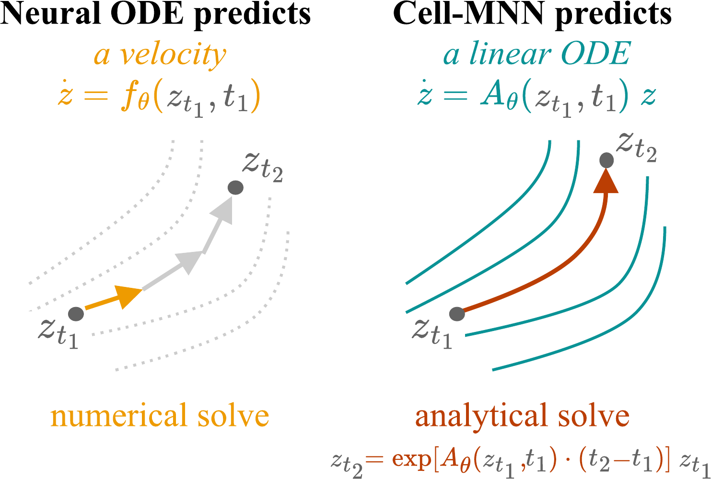
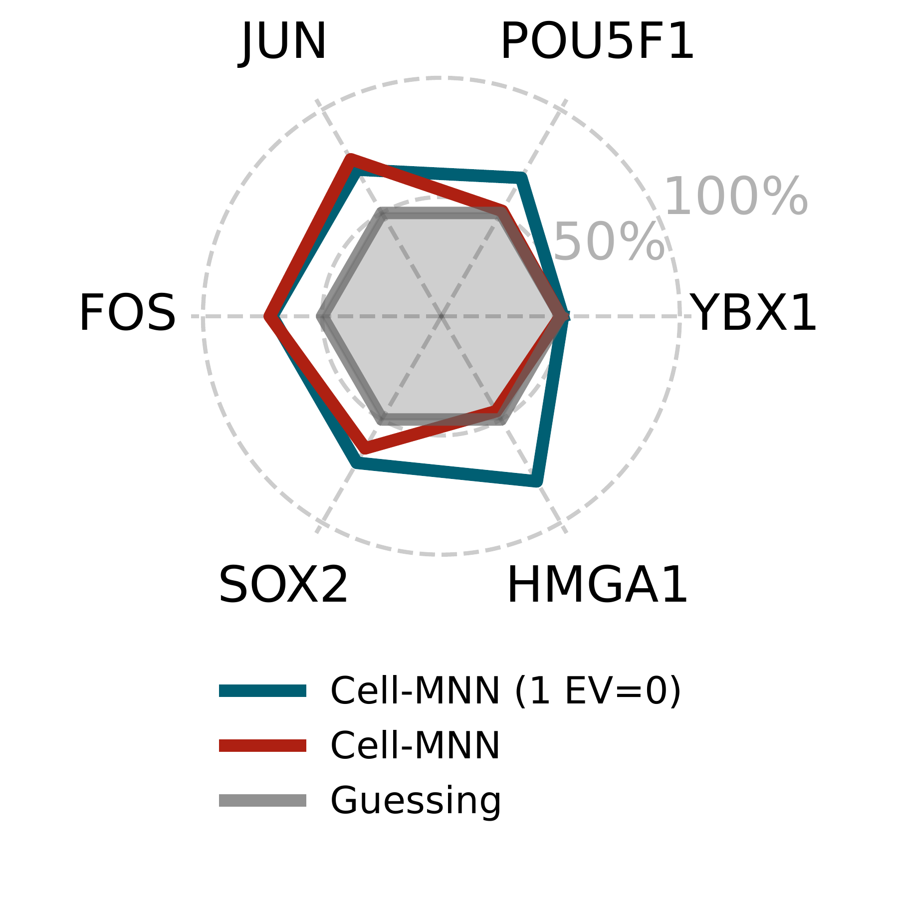
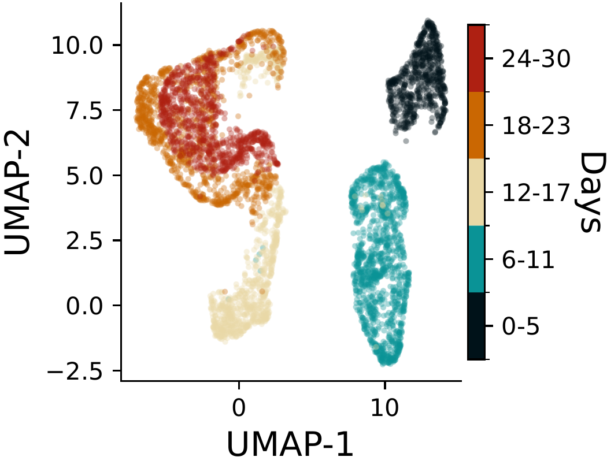

Learning Explicit Single-Cell Dynamics Using ODE Representations
Cell-MNN: an end-to-end encoder–decoder whose latent representation is a locally linearized ODE, jointly predicting cell fate and recovering interpretable gene interactions
Modeling how stem cells differentiate into specialized tissue cells is central to understanding diseases such as cancer, but single-cell measurements destroy the cell, leaving only snapshot observations of a population at a few time points. State-of-the-art trajectory models rely on expensive optimal-transport preprocessing and multi-stage training, and do not expose explicit gene interactions. Cell-Mechanistic Neural Networks (Cell-MNN) are an end-to-end encoder–decoder whose latent representation is a locally linearized ODE: an MLP acts as a hypernetwork that, at each operating point, predicts a linear operator approximating the local dynamics, which is then solved analytically via the matrix exponential. The same operator, projected back through the PCA map, yields explicit gene-to-gene interaction weights. Cell-MNN attains the best average earth-mover’s-distance across the Cite, EB, and Multi single-cell benchmarks, remains trainable where optimal-transport baselines run out of memory on upsampled datasets, supports amortized joint training across datasets, and recovers signed gene interactions that agree with the literature-curated TRRUST database.
The problem: dynamics from snapshots
The process by which stem cells differentiate into specialized tissue cells is still poorly understood, and predicting cellular fate remains an open problem in systems biology. A deeper grasp of these dynamics matters for diseases such as cancer and for understanding how genes activate or repress one another as a cell differentiates. The combinatorial space of possible gene interactions is vast — the paper notes on the order of 10^8 theoretically possible interactions — yet single-cell sequencing now produces datasets growing faster than Moore’s law, making this a natural target for machine learning.
The defining difficulty is that measuring a cell destroys it. Each cell is observed at exactly one point along its trajectory — a snapshot observation — so the data is a set of unpaired population marginals at a handful of experimental time points, not a set of tracked trajectories. The task is to learn dynamics for the observable gene-expression vector \mathbf{x}_t that are consistent with the family of marginals \{p_t\}_{t\in\mathcal{T}}.

Best-performing methods in this setting depend on optimal-transport (OT) preprocessing to manufacture trajectory labels, which becomes a bottleneck at scale: the Sinkhorn algorithm scales quadratically in the number of samples (Cuturi 2013). Strong baselines such as OT-MFM (Kapusniak et al. 2024) and DeepRUOT (Zhang et al. 2025) also involve multiple training stages and networks, which makes amortized training across datasets awkward. And none of these methods directly learns explicit gene interactions.
Cell-MNN: a locally linearized latent ODE
Cell-MNN is an encoder–decoder model that learns a mechanistic map
\mathbf{x}_{t+\Delta t} = \text{Cell-MNN}_\theta(\mathbf{x}_t, t, \Delta t),
predicting the state after an arbitrary interval \Delta t. Following prior work (Tong et al. 2024), the high-dimensional gene-expression vector is first projected to a low-dimensional latent space by PCA, \mathbf{z} = \mathbf{V}_{\text{PCA}}^\top \mathbf{x}, and the dynamics are learned in that subspace. The latent state is assumed to follow non-autonomous, non-linear dynamics \dot{\mathbf{z}} = \mathbf{f}(\mathbf{z}, t). Learning an explicit global form of \mathbf{f} is intractable, so Cell-MNN instead linearizes locally: at each operating point (\mathbf{z}^{(i)}, t^{(i)}) it approximates the dynamics by a linear ODE in a small neighborhood,
\dot{\mathbf{z}} = \mathbf{f}(\mathbf{z}, t) \approx \mathbf{A}_\theta\!\big(\mathbf{z}^{(i)}, t^{(i)}\big)\,\mathbf{z}.
The linear operator \mathbf{A}_\theta is produced by an \text{MLP}_\theta that maps the operating point into the space of linear operators. Crucially, although the operator governing the local dynamics is linear, it is a non-linear function of the current state and time, so the global behavior remains non-linear. This is the role the paper draws as a meta-learning task for the encoder.

This view is conceptually orthogonal to Neural ODEs (Chen et al. 2018), which learn a single unconditional black-box velocity field. Here the MLP behaves like a hypernetwork (2017): it outputs a state-conditioned, white-box linear operator for each operating point, which makes the learned dynamics explicit and lets a single network amortize across arbitrarily many states and datasets.
Decoding is analytic. Because the local dynamics are linear and time-invariant for a fixed \mathbf{A}_\theta, the latent ODE has a closed-form solution via the matrix exponential,
\mathbf{z}(t^{(i)} + \Delta t) = \exp\!\big(\mathbf{A}_\theta\,\Delta t\big)\,\mathbf{z}_t^{(i)},
with predictions mapped back to gene space by \mathbf{x}(t+\Delta t) = \mathbf{V}_{\text{PCA}}\,\mathbf{z}(t+\Delta t). No numerical ODE solver and no recursion over a time grid are required.1
1 The MLP predicts \mathbf{A}_\theta in eigen-decomposed form \mathbf{A}_\theta = \mathbf{P}_\theta\,\text{diag}(\boldsymbol{\lambda}_\theta)\,\mathbf{P}_\theta^{-1}, which both eases the matrix exponential and allows inductive biases such as fixing an eigenvalue to zero. Evaluating the solution at T time points costs \mathcal{O}(T\,d_z^2) time and \mathcal{O}(d_z^2) space, with a one-time \mathcal{O}(d_z^3) cost per operating point to form the operator.

The model is trained end-to-end (besides PCA) by minimizing a discounted Maximum Mean Discrepancy (Gretton et al. 2012) between the model-induced marginals and the empirical marginals, computed in latent space, with a kinetic-energy regularizer encouraging trajectories close to optimal-transport flows and an invertibility regularizer on \mathbf{P}_\theta.
Explicit gene interactions, for free
Because both the PCA projection and the local dynamics are linear, the predicted local operator can be pushed back into gene-expression space, \tfrac{d}{dt}\mathbf{x} = \mathbf{V}_{\text{PCA}}\,\mathbf{A}_\theta\,\mathbf{V}_{\text{PCA}}^\top\,\mathbf{x}, giving an explicit form for the local dynamics. The paper reads off a per-cell interaction weight from gene j to gene i as
w_{j\rightarrow i}(\mathbf{x}, t) := \big[\mathbf{V}_{\text{PCA}}\,\mathbf{A}_\theta(\mathbf{x}, t)\,\mathbf{V}_{\text{PCA}}^\top\big]_{i,j}\cdot \mathbf{x}_j,
the contribution of gene j’s expression to the time-derivative of gene i. The sign of w_{j\rightarrow i} classifies an interaction as activating or repressing — an unsupervised readout obtained as a byproduct of the linearization, with no interaction labels used in training.
Results
Single-cell interpolation
The experiments use three commonly studied real datasets, preprocessed as in prior work (Tong et al. 2020, 2024): the Embryoid Body (EB) dataset (Moon et al. 2019) ($16K human embryoid cells, five time points over 25 days), and the **CITE-seq (Cite)** (31K cells) and **Multiome (Multi)** ($33K cells) datasets (Burkhardt et al. 2022), each measured at four time points over seven days. Each intermediate day is left out in cross-validation fashion, and models are scored by the 1-Wasserstein distance (EMD) in the 5-dimensional PCA subspace; lower is better.
Cell-MNN achieves the best result on EB and Multi and ranks second on Cite, giving the best average EMD across the three datasets. It is also the only method that beats the authors’ own OT-Interpolate reference on every dataset.
| Method | Cite (5D) | EB (5D) | Multi (5D) | Average ↓ |
|---|---|---|---|---|
| OT-CFM (Tong et al. 2024) | 0.882 | 0.790 | 0.937 | 0.870 |
| DeepRUOT (Zhang et al. 2025) | 0.845 | 0.776 | 0.919 | 0.846 |
| OT-Interpolate (theirs) | 0.821 | 0.749 | 0.830 | 0.800 |
| OT-MFM (Kapusniak et al. 2024) | 0.724 | 0.713 | 0.890 | 0.776 |
| Cell-MNN (ours) | 0.791 | 0.690 | 0.742 | 0.741 |
Amortized training and scalability
Because Cell-MNN trains in a single stage, it can be jointly trained across datasets with the same time scale (Cite and Multi). In this amortized setting it outperforms both OT-CFM and I-CFM and reaches performance comparable to training on each dataset separately — an average EMD of 0.768 for Cell-MNN versus 0.835 for OT-CFM and 0.925 for I-CFM across the two datasets.
The end-to-end design also matters at scale. When the three datasets are synthetically inflated to 250,000 cells each (with added Gaussian noise on the PCA embeddings), the dataset-wide OT preprocessing required by OT-CFM and DeepRUOT runs out of memory on an 11 GB GPU, owing to the quadratic memory cost of Sinkhorn. Against a minibatch-OT variant (Batch-OT-CFM) and I-CFM — evaluated with the MMD metric, which is computable batch-wise — Cell-MNN attains the best score on all three inflated datasets.
| Model (inflated, MMD ↓) | Cite | EB | Multi |
|---|---|---|---|
| I-CFM | 0.0390 | 0.0403 | 0.0482 |
| OT-CFM | OOM | OOM | OOM |
| DeepRUOT | OOM | OOM | OOM |
| Batch-OT-CFM | 0.0232 | 0.0243 | 0.0302 |
| Cell-MNN | 0.0225 | 0.0240 | 0.0252 |
Recovering gene interactions
To check whether the learned interactions are biologically meaningful, the signed weights w_{j\rightarrow i} are validated against the literature-curated TRRUST database (Han et al. 2018), which contains 8,444 regulatory relationships synthesized from 11,237 PubMed articles. For each of the most active source genes, the model predicts activation versus repression for the labeled TRRUST edges — an unsupervised classification task.
Averaged over the reported source genes, Cell-MNN reaches an F1 of 69%, about twenty percentage points above SCODE (Matsumoto et al. 2017) (46%) and the Jacobian-of-OT-CFM baseline (48%) (Qiu et al. 2022). An inductive bias that fixes one eigenvalue of \mathbf{A}_\theta to zero — encoding that some genes stay static over time — lifts F1 from 60% to 69% while costing only about 1% of interpolation performance.

| Source gene | N_{\text{int}} | SCODE | OT-CFM (J) | Cell-MNN (1EV=0) |
|---|---|---|---|---|
| JUN | 65 | 56.34% | 64% | 71% |
| FOS | 25 | 38.10% | 50% | 71% |
| YBX1 | 24 | 54.55% | 72% | 51% |
| POU5F1 | 19 | 14.29% | 13% | 67% |
| SOX2 | 16 | 84.21% | 60% | 71% |
| HMGA1 | 10 | 25.00% | 31% | 80% |
| Average | 46% | 48% | 69% |
Visualizing the predicted operators with UMAP shows that Cell-MNN learns distinct dynamics across time — the operators separate by time range rather than collapsing to a single global rule.

Why it matters
Cell-MNN jointly addresses two goals that previous methods treated separately: accurate trajectory reconstruction from snapshot data, and discovery of interpretable gene interactions — while removing the OT-preprocessing bottleneck and the multi-stage training that hampered scaling and amortization. Because the dynamics are expressed in locally linear form, the authors point to control theory as a natural next direction: in principle one could design perturbations that steer gene-expression states toward desired configurations, which could inform experimental follow-up such as CRISPR-based edits. The learned interactions are best read as hypotheses for experimental validation, not biological ground truth.
A copyable BibTeX entry for this paper is generated automatically below; full references appear in the margin.
Citation
@inproceedings{von_bassewitz2026,
author = {von Bassewitz, Jan-Philipp and Pervez, Adeel and Fumero,
Marco and Robinson, Matthew and Karaletsos, Theofanis and Locatello,
Francesco},
title = {Learning {Explicit} {Single-Cell} {Dynamics} {Using} {ODE}
{Representations}},
booktitle = {Proceedings of the Fourteenth International Conference on
Learning Representations (ICLR)},
date = {2026-03-04},
url = {https://arxiv.org/abs/2510.02903}
}